Note
Go to the end to download the full example code.
Bayesian Magnetic Inversion: Soricom Chromite Lens¶
This tutorial demonstrates Bayesian inversion of Total Magnetic Intensity (TMI) data using the Soricom fault structural model. It extends the magnetic inversion methodology to a more complex geological setting with a fault and a chromite lens hosted in ultramafic rocks.
What Makes the Soricom Model Different?
Unlike the simple Tharsis plutonite model (sphx_glr_02_probabilistic_modeling_05_magnetics_inversion.py), the Soricom model features:
A fault: The Main_Fault truncates all formations (fault-first structural frame ordering)
A chromite lens: A thin, high-susceptibility target embedded in host rock
Smaller extent: ~500 m × 350 m area at UTM zone 34N coordinates
Higher resolution: Octree refinement level 5 on a much smaller domain
Data and Preprocessing
TMI data is extracted from a merged B1B2 raster at the Soricom prospect. The raw measurements are in nanoTesla (nT) and include Earth’s background magnetic field (~47,500 nT at this location). Since the GemPy forward model computes TMI anomalies (deviations from the background field), we subtract the IGRF (International Geomagnetic Reference Field) intensity before inversion:
For comprehensive theory on Bayesian inversion, MCMC, and hierarchical likelihoods, see sphx_glr_02_probabilistic_modeling_04_gravity_inversion.py.
import os
import sys
Import Libraries¶
import dotenv
dotenv.load_dotenv()
from gempy_probability.modules.plot.plot_posterior import default_red, default_blue
from mineye.GeoModel.model_one.visualization import (
gempy_viz,
plot_many_observed_vs_forward,
generate_gravity_uncertainty_plots,
)
from mineye.GeoModel.plotting.probabilistic_analysis import plot_geophysics_comparison
import numpy as np
import matplotlib.pyplot as plt
import gempy as gp
import gempy_probability as gpp
import gempy_viewer as gpv
import torch
import pyro
import pyro.distributions as dist
import arviz as az
from gempy_probability.core.samplers_data import NUTSConfig
# Set random seeds for reproducibility
seed = 4003
pyro.set_rng_seed(seed)
torch.manual_seed(seed)
np.random.seed(1234)
Setting Backend To: AvailableBackends.PYTORCH
Import Soricom-specific helpers
from mineye.config import paths
from mineye.config.example_parameters import SoricomModelConfig
from mineye.GeoModel.geophysics import align_forward_to_observed
from mineye.GeoModel.model_one.probabilistic_model import normalize, set_magnetic_priors
from mineye.GeoModel.model_one.probabilistic_model_likelihoods import (
generate_multimagnetic_likelihood_hierarchical_per_station,
)
from gempy_engine.modules.geophysics.magnetic_gradient import calculate_magnetic_gradient_tensor
from gempy_engine.core.data.geophysics_input import MagneticsInput
Step 1: Load Preprocessed Magnetic Observations¶
Preprocessing Applied
The raw TMI raster values (~47,000 nT) include Earth’s ambient magnetic field. To match the forward model (which computes anomalies), we subtract the IGRF intensity of 47,500 nT. The resulting anomalies range from -392 to -42 nT, consistent with the forward model output (~-550 to -475 nT).
def read_magnetics():
"""Read preprocessed magnetic data from extracted numpy arrays."""
try:
this_file = __file__
except NameError:
this_file = sys.argv[0]
current_dir = os.path.dirname(os.path.abspath(this_file))
xyz_path = os.path.join(current_dir, 'soricom_magnetic_xyz_adaptive.npy')
mag_path = os.path.join(current_dir, 'soricom_magnetic_values_adaptive.npy')
xyz = np.load(xyz_path)
mag = np.load(mag_path)
# Subsample 20 points for inversion (random subset, seed fixed)
rng = np.random.default_rng(42)
idx = rng.choice(len(xyz), size=min(20, len(xyz)), replace=False)
sampled_xyz = xyz[idx]
# IGRF: forward model outputs TMI anomalies, so subtract IGRF from raw TMI
igrf_intensity_nT = 47_500.0
observed_magnetics = mag[idx] - igrf_intensity_nT
return sampled_xyz, observed_magnetics
magnetic_xyz, observed_magnetics_nt = read_magnetics()
print(f"\nMagnetic observations:")
print(f" Number of measurements: {len(observed_magnetics_nt)}")
print(f" Range: {observed_magnetics_nt.min():.1f} to {observed_magnetics_nt.max():.1f} nT")
print(f" Mean: {observed_magnetics_nt.mean():.1f} nT")
Magnetic observations:
Number of measurements: 20
Range: -392.4 to -42.1 nT
Mean: -211.5 nT
Step 2: Setup Geomodel with Soricom Fault Configuration¶
geo_model = gp.create_geomodel(
project_name=SoricomModelConfig.PROJECT_NAME,
extent=SoricomModelConfig.EXTENT,
refinement=SoricomModelConfig.REFINEMENT,
importer_helper=gp.data.ImporterHelper(
path_to_orientations=paths.get_soricom_orientations(),
path_to_surface_points=paths.get_soricom_formation_points(),
),
)
geo_model.grid = geo_model.grid.init_octree_grid(
extent=SoricomModelConfig.EXTENT,
octree_levels=SoricomModelConfig.REFINEMENT,
)
geo_model.interpolation_options.number_octree_levels_surface = 2
gp.map_stack_to_surfaces(
gempy_model=geo_model,
mapping_object=SoricomModelConfig.SURFACE_MAPPING,
)
geo_model.structural_frame.structural_groups[
SoricomModelConfig.FAULT_GROUP_INDEX
].structural_relation = gp.data.StackRelationType.FAULT
geo_model.structural_frame.fault_relations = SoricomModelConfig.FAULT_RELATIONS_MATRIX
Compute initial model to see geometry
gp.compute_model(geo_model)
gpv.plot_2d(geo_model)
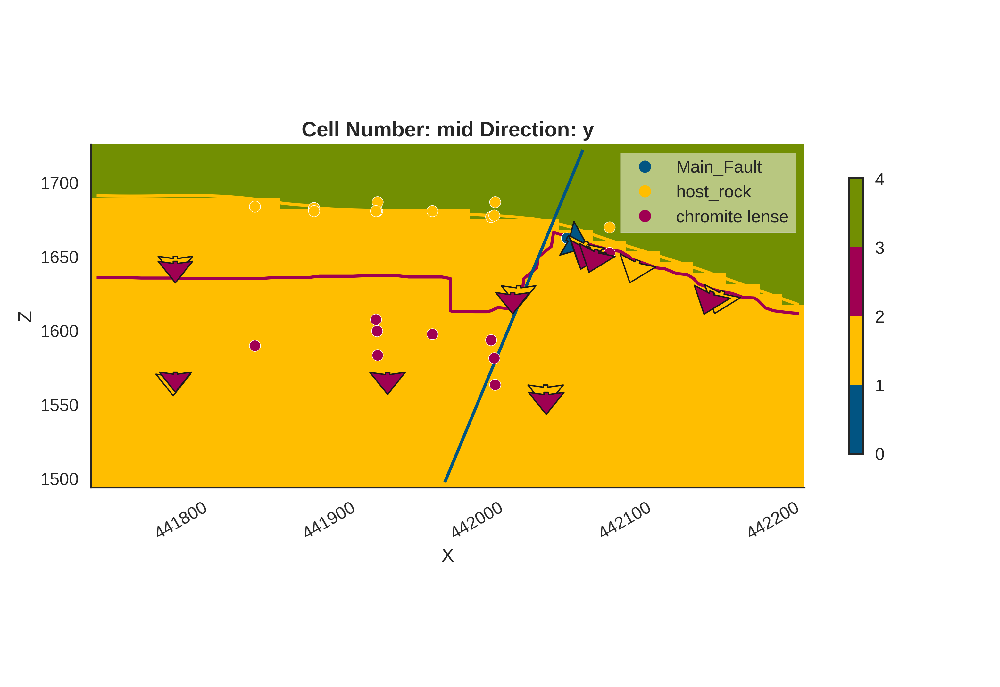
Setting Backend To: AvailableBackends.PYTORCH
/home/leguark/.venv/2025/lib/python3.13/site-packages/torch/utils/_device.py:116: UserWarning: Using torch.cross without specifying the dim arg is deprecated.
Please either pass the dim explicitly or simply use torch.linalg.cross.
The default value of dim will change to agree with that of linalg.cross in a future release. (Triggered internally at /pytorch/aten/src/ATen/native/Cross.cpp:63.)
return func(*args, **kwargs)
/home/leguark/.venv/2025/lib/python3.13/site-packages/torch/utils/_device.py:116: UserWarning: To copy construct from a tensor, it is recommended to use sourceTensor.detach().clone() or sourceTensor.detach().clone().requires_grad_(True), rather than torch.tensor(sourceTensor).
return func(*args, **kwargs)
<gempy_viewer.modules.plot_2d.visualization_2d.Plot2D object at 0x7f2577995d30>
gpv.plot_3d(
model=geo_model,
ve=5,
image=False,
kwargs_pyvista_bounds={
'show_xlabels': False,
'show_ylabels': False,
'show_zlabels': False,
},
)
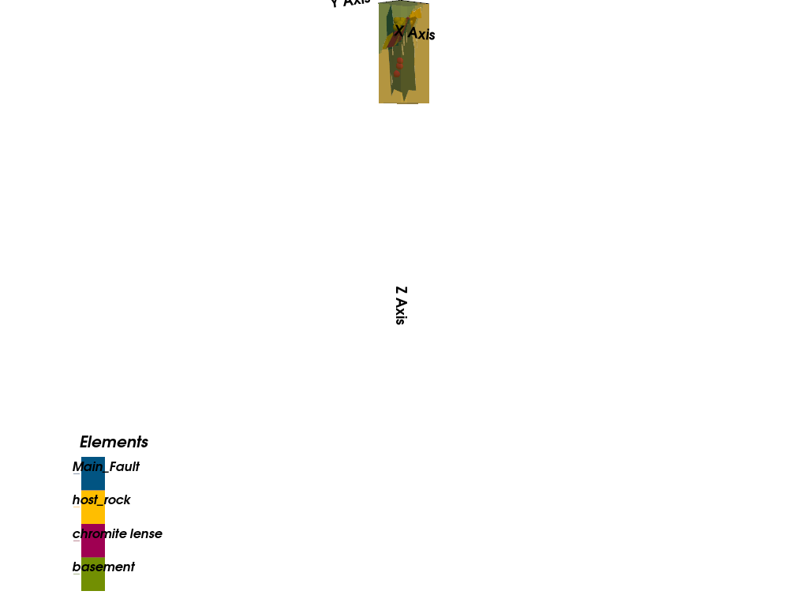
/home/leguark/Projects/gempy_project/gempy_viewer/gempy_viewer/modules/plot_3d/drawer_surfaces_3d.py:38: PyVistaDeprecationWarning:
/home/leguark/Projects/gempy_project/gempy_viewer/gempy_viewer/modules/plot_3d/drawer_surfaces_3d.py:38: Argument 'color' must be passed as a keyword argument to function 'BasePlotter.add_mesh'.
From version 0.50, passing this as a positional argument will result in a TypeError.
gempy_vista.surface_actors[element.name] = gempy_vista.p.add_mesh(
<gempy_viewer.modules.plot_3d.vista.GemPyToVista object at 0x7f2577995160>
Step 3: Setup Magnetic Forward Model¶
Magnetic Configuration
We configure centered grids at each measurement location and pre-compute the TMI gradient kernel (the linear operator that maps susceptibility to TMI).
Susceptibility values (initial guess, in SI units):
Main_Fault: 0.0 (faults have no intrinsic susceptibility in this model)host_rock: 0.05 (ultramafic host with moderate magnetite content)chromite_lense: 0.001 (chromite has low magnetic susceptibility)basement: 0.001 (low-susceptibility country rock)
IGRF parameters at Soricom (WGS 84 UTM zone 34N): - Inclination: 57.0° - Declination: 4.0° - Intensity: 47,500 nT
gp.set_centered_grid(
grid=geo_model.grid,
centers=magnetic_xyz,
resolution=np.array([10, 10, 15]),
radius=np.array([2000, 5000, 2000]),
)
gradient_tensor_dict = calculate_magnetic_gradient_tensor(
centered_grid=geo_model.grid.centered_grid,
igrf_params={
"inclination": 57.0,
"declination": 4.0,
"intensity": 47500.0,
},
compute_tmi=True,
units_nT=True,
)
geo_model.geophysics_input = gp.data.GeophysicsInput(
magnetics_input=MagneticsInput(
mag_kernel=gradient_tensor_dict['tmi_kernel'],
susceptibilities=np.array([0.0, 0.05, 0.001, 0.001]),
igrf_params={
"inclination": gradient_tensor_dict['inclination'],
"declination": gradient_tensor_dict['declination'],
"intensity": gradient_tensor_dict['intensity'],
},
),
)
geo_model.interpolation_options.mesh_extraction = False
gp.set_active_grid(
grid=geo_model.grid,
grid_type=[geo_model.grid.GridTypes.CENTERED],
reset=True,
)
gp.compute_model(geo_model)
geo_model.interpolation_options.sigmoid_slope = 100
print(f"\n✓ Geomodel configured with {len(magnetic_xyz)} magnetic measurement locations")
Active grids: GridTypes.OCTREE|CENTERED|NONE
Active grids: GridTypes.CENTERED|NONE
Setting Backend To: AvailableBackends.PYTORCH
✓ Geomodel configured with 20 magnetic measurement locations
Step 4: Compute Baseline Forward Model¶
sol = gp.compute_model(geo_model)
baseline_fw_magnetics_np = (
sol.magnetics.detach().cpu().numpy()
if hasattr(sol.magnetics, 'detach')
else sol.magnetics
)
print(f"\nBaseline forward magnetics:")
print(f" Range: {baseline_fw_magnetics_np.min():.1f} to {baseline_fw_magnetics_np.max():.1f} nT")
print(f" Mean: {baseline_fw_magnetics_np.mean():.1f} nT")
Setting Backend To: AvailableBackends.PYTORCH
Baseline forward magnetics:
Range: -550.8 to -475.6 nT
Mean: -524.1 nT
Step 5: Normalize Forward Model to Observations¶
We align the forward model anomalies to the observed anomaly scale using
align_to_reference, matching mean and standard deviation.
norm_params = normalize(
baseline_fw_gravity_np=baseline_fw_magnetics_np,
observed_gravity=observed_magnetics_nt,
method="align_to_reference",
extrapolation_buffer=0.3,
)
print(f"\nNormalization parameters:")
print(f" Method: {norm_params['method']}")
Computing align_to_reference alignment parameters...
Alignment params: {'method': 'align_to_reference', 'reference_mean': -211.51229858398438, 'reference_std': 81.00399017333984, 'baseline_forward_mean': -524.0854965423575, 'baseline_forward_std': 17.63784969998283}
Normalization parameters:
Method: align_to_reference
Visualize baseline fit
plot_geophysics_comparison(
forward_norm=align_forward_to_observed(baseline_fw_magnetics_np, norm_params),
normalization_method="align_to_reference",
observed_ugal=observed_magnetics_nt,
xy_ravel=magnetic_xyz,
unit_label='nT',
)
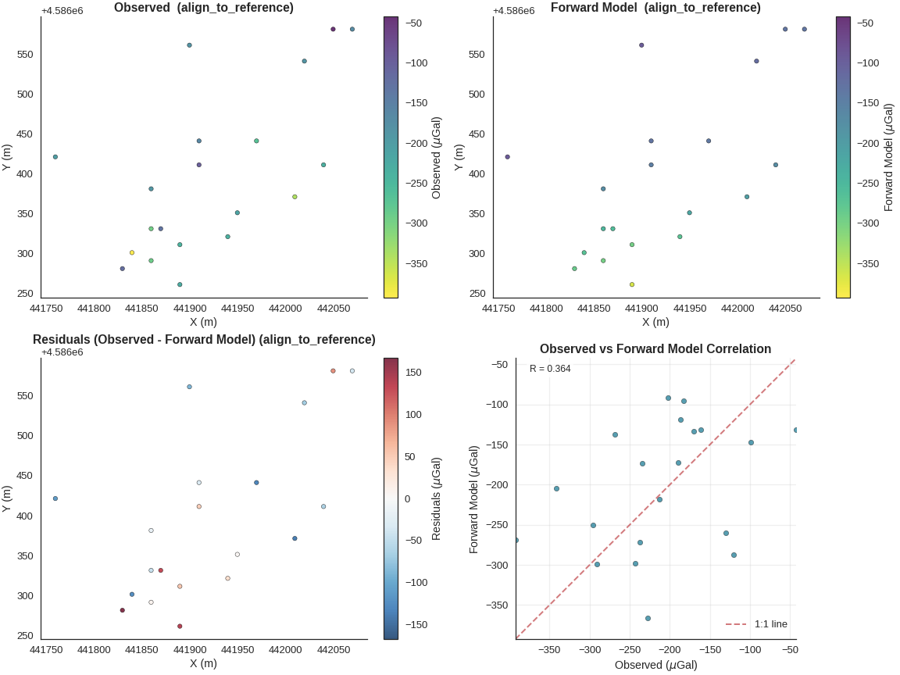
Step 6: Define Prior Distributions¶
Susceptibility Priors (SI units):
Unlike the Tharsis model (2 units), the Soricom model has 4 units: fault, host rock, chromite lens, and basement. The fault and basement have near-zero susceptibility, while the host rock has moderate susceptibility and the chromite lens is a low-susceptibility target within the host.
n_orientations = geo_model.orientations_copy.xyz.shape[0]
prior_key_dips = r'dips'
prior_key_susceptibility = r'susceptibility'
model_priors = {
prior_key_dips: dist.Normal(
loc=torch.full((n_orientations,), 10.0, dtype=torch.float64),
scale=torch.tensor(10.0, dtype=torch.float64),
validate_args=True,
),
prior_key_susceptibility: dist.Normal(
loc=torch.tensor([0.0, 0.05, 0.001, 0.001], dtype=torch.float64),
scale=torch.tensor(0.03, dtype=torch.float64),
).to_event(1),
}
Step 7: Define Deterministic Functions¶
post_forward_dets = {
"magnetic_response_raw": lambda samples, gm, sol: sol.magnetics,
r'$\mu_{magnetics}$': lambda samples, gm, sol: align_forward_to_observed(
sol.magnetics, norm_params,
),
"mean_magnetics": lambda samples, gm, sol: torch.mean(
align_forward_to_observed(sol.magnetics, norm_params),
),
"max_magnetics": lambda samples, gm, sol: torch.max(
align_forward_to_observed(sol.magnetics, norm_params), 0,
),
}
Step 8: Define Likelihood Function¶
Hierarchical likelihood with per-station noise. The global noise prior is centered at 150 nT, appropriate for the observed anomaly scatter of ~152 nT.
likelihood_fn = generate_multimagnetic_likelihood_hierarchical_per_station(
norm_params=norm_params,
)
print("Likelihood function created (hierarchical per-station)")
print(" Global mean noise prior: ~150.0 nT")
Likelihood function created (hierarchical per-station)
Global mean noise prior: ~150.0 nT
Step 9: Create Probabilistic Model¶
prob_model: gpp.GemPyPyroModel = gpp.make_gempy_pyro_model(
priors=model_priors,
set_interp_input_fn=set_magnetic_priors,
likelihood_fn=likelihood_fn,
obs_name="Magnetic Measurement (Soricom)",
)
print("Probabilistic model created")
print(" Model components:")
print(" - Priors: dips (orientations), susceptibility")
print(" - Forward model: GemPy geological interpolation + TMI")
print(" - Likelihood: Hierarchical per-station noise")
print(" - Deterministics: magnetic_response, mean_magnetics, max_magnetics")
Setting Backend To: AvailableBackends.PYTORCH
Probabilistic model created
Model components:
- Priors: dips (orientations), susceptibility
- Forward model: GemPy geological interpolation + TMI
- Likelihood: Hierarchical per-station noise
- Deterministics: magnetic_response, mean_magnetics, max_magnetics
Step 10: Prior Predictive Checks¶
print("\nRunning prior predictive sampling (100 samples)...")
prior_inference_data: az.InferenceData = gpp.run_predictive(
prob_model=prob_model,
geo_model=geo_model,
y_obs_list=torch.tensor(observed_magnetics_nt),
n_samples=100,
plot_trace=True,
)
print("✓ Prior predictive sampling complete")
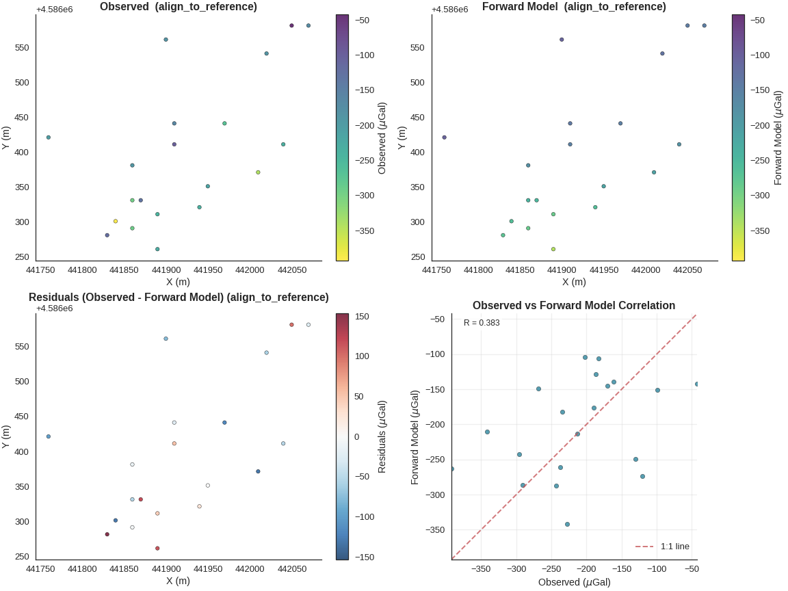
Running prior predictive sampling (100 samples)...
/home/leguark/.venv/2025/lib/python3.13/site-packages/arviz/stats/density_utils.py:488: UserWarning: Your data appears to have a single value or no finite values
warnings.warn("Your data appears to have a single value or no finite values")
✓ Prior predictive sampling complete
Visualize Prior Geological Models¶
gempy_viz(
geo_model=geo_model,
prior_inference_data=prior_inference_data,
n_samples=20,
)
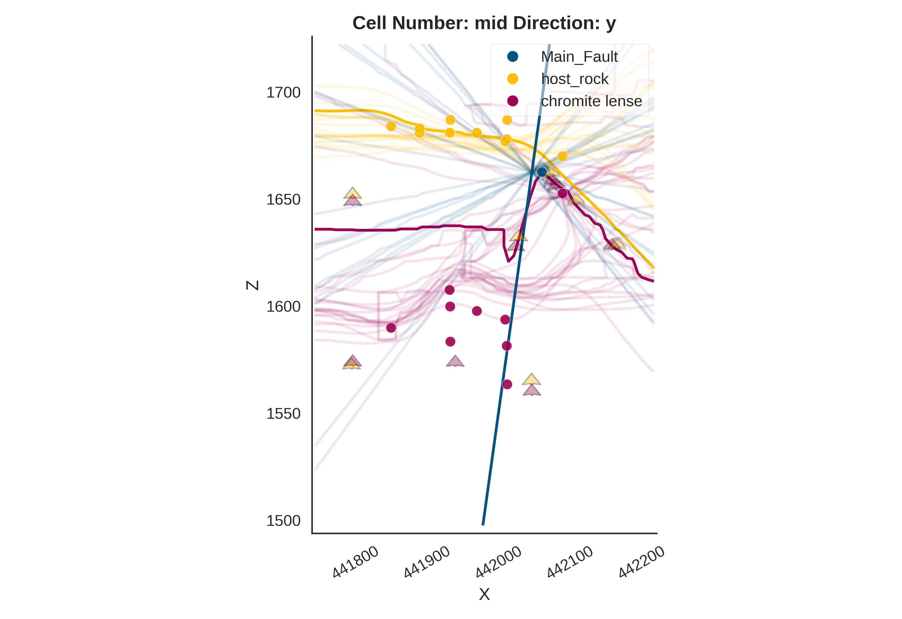
Active grids: GridTypes.OCTREE|NONE
Setting Backend To: AvailableBackends.PYTORCH
/home/leguark/.venv/2025/lib/python3.13/site-packages/torch/utils/_device.py:116: UserWarning: To copy construct from a tensor, it is recommended to use sourceTensor.detach().clone() or sourceTensor.detach().clone().requires_grad_(True), rather than torch.tensor(sourceTensor).
return func(*args, **kwargs)
Setting Backend To: AvailableBackends.PYTORCH
/home/leguark/Projects/gempy_project/gempy_viewer/gempy_viewer/modules/plot_2d/drawer_contours_2d.py:38: UserWarning: The following kwargs were not used by contour: 'linewidth', 'contour_colors'
contour_set = ax.contour(
Setting Backend To: AvailableBackends.PYTORCH
Setting Backend To: AvailableBackends.PYTORCH
Setting Backend To: AvailableBackends.PYTORCH
Setting Backend To: AvailableBackends.PYTORCH
Setting Backend To: AvailableBackends.PYTORCH
Setting Backend To: AvailableBackends.PYTORCH
Setting Backend To: AvailableBackends.PYTORCH
Setting Backend To: AvailableBackends.PYTORCH
Setting Backend To: AvailableBackends.PYTORCH
Setting Backend To: AvailableBackends.PYTORCH
Setting Backend To: AvailableBackends.PYTORCH
Setting Backend To: AvailableBackends.PYTORCH
Setting Backend To: AvailableBackends.PYTORCH
Setting Backend To: AvailableBackends.PYTORCH
Setting Backend To: AvailableBackends.PYTORCH
Setting Backend To: AvailableBackends.PYTORCH
Setting Backend To: AvailableBackends.PYTORCH
Setting Backend To: AvailableBackends.PYTORCH
Setting Backend To: AvailableBackends.PYTORCH
<gempy_viewer.modules.plot_2d.visualization_2d.Plot2D object at 0x7f26b9c9f250>
Compare Multiple Prior Predictions to Observations
plot_many_observed_vs_forward(
forward_norm=align_forward_to_observed(baseline_fw_magnetics_np, norm_params),
many_forward_norm=prior_inference_data.prior[r'$\mu_{magnetics}$'].values[0, -10:],
observed_norm=observed_magnetics_nt,
unit_label='nT',
)
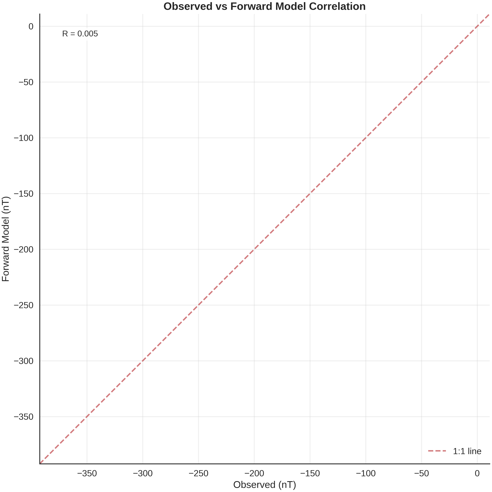
Step 11: Load Pre-computed Results¶
Full MCMC inference takes hours. Load pre-computed results from a previous run with 200 warmup steps, 200 samples, and NUTS sampler.
To run inference yourself, set RUN_SIMULATION = True below.
RUN_SIMULATION = False
if RUN_SIMULATION:
print("\nRunning NUTS inference...")
magnetic_observations_tensor = torch.tensor(observed_magnetics_nt)
# MCMC inference
data = gpp.run_nuts_inference(
prob_model=prob_model,
geo_model=geo_model,
y_obs_list=magnetic_observations_tensor,
config=NUTSConfig(
step_size=0.0001,
adapt_step_size=True,
target_accept_prob=0.65,
max_tree_depth=5,
init_strategy='median',
num_samples=200,
warmup_steps=200,
),
plot_trace=True,
run_posterior_predictive=True,
)
data.extend(prior_inference_data)
print("✓ NUTS inference complete")
else:
from pathlib import Path
import inspect
current_dir = Path(inspect.getfile(inspect.currentframe())).parent.resolve()
data_path = current_dir / "arviz_data_magnetic_soricom.nc"
if not data_path.exists():
raise FileNotFoundError(
f"Data file not found at {data_path}. "
f"Please run the simulation first with RUN_SIMULATION=True"
)
data = az.from_netcdf(str(data_path))
print(f"✓ Loaded inference results from {data_path}")
✓ Loaded inference results from /home/leguark/Projects/gempy_project/Mineye-Terranigma/examples/02_probabilistic_modeling/arviz_data_magnetic_soricom.nc
Analysis: Parameter Posterior Statistics¶
posterior_dips = data.posterior['dips'].values
print(f"\nPosterior dip statistics:")
print(f" Shape: {posterior_dips.shape}")
print(f" Mean: {posterior_dips.mean():.2f}°")
print(f" Std: {posterior_dips.std():.2f}°")
posterior_suscept = data.posterior['susceptibility'].values
print(f"\nPosterior susceptibility statistics:")
print(f" Fault - Mean: {posterior_suscept[:, :, 0].mean():.4f} SI")
print(f" Host rock - Mean: {posterior_suscept[:, :, 1].mean():.4f} SI")
print(f" Chromite - Mean: {posterior_suscept[:, :, 2].mean():.4f} SI")
print(f" Basement - Mean: {posterior_suscept[:, :, 3].mean():.4f} SI")
if hasattr(data, 'prior'):
prior_dips = data.prior['dips'].values
uncertainty_reduction = (1 - posterior_dips.std() / prior_dips.std()) * 100
print(f"\nUncertainty reduction in dips: {uncertainty_reduction:.1f}%")
prior_suscept = data.prior['susceptibility'].values
suscept_uncertainty_reduction = (
1 - posterior_suscept.std() / prior_suscept.std()
) * 100
print(f"Uncertainty reduction in susceptibility: {suscept_uncertainty_reduction:.1f}%")
Posterior dip statistics:
Shape: (1, 200, 16)
Mean: 10.44°
Std: 3.14°
Posterior susceptibility statistics:
Fault - Mean: -0.0109 SI
Host rock - Mean: 0.0167 SI
Chromite - Mean: 0.0657 SI
Basement - Mean: 0.0770 SI
Uncertainty reduction in dips: 68.7%
Uncertainty reduction in susceptibility: -12.1%
Analysis: Predictive Performance¶
posterior_magnetics = data.posterior_predictive['Magnetic Measurement (Soricom)'].values
print(f"\nPosterior predictive magnetics:")
print(f" Mean: {posterior_magnetics.mean():.1f} nT")
print(f" Std: {posterior_magnetics.std():.1f} nT")
residuals = posterior_magnetics.mean(axis=(0, 1)) - observed_magnetics_nt
print(f"\nResiduals (posterior mean - observed):")
print(f" Mean: {residuals.mean():.2f} nT (bias)")
print(f" RMS: {np.sqrt((residuals ** 2).mean()):.2f} nT (fit quality)")
Posterior predictive magnetics:
Mean: -211.5 nT
Std: 81.0 nT
Residuals (posterior mean - observed):
Mean: 0.00 nT (bias)
RMS: 0.00 nT (fit quality)
Posterior Predictive: Model Fit Analysis¶
plot_many_observed_vs_forward(
forward_norm=align_forward_to_observed(baseline_fw_magnetics_np, norm_params),
many_forward_norm=data.posterior_predictive[r'$\mu_{magnetics}$'].values[0, -20:],
observed_norm=observed_magnetics_nt,
unit_label='nT',
)
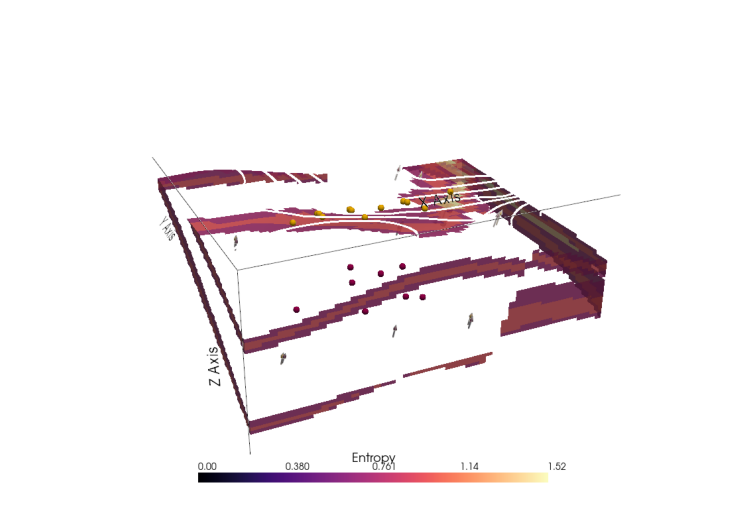
Density plots comparing prior and posterior distributions
az.plot_density(
data=[data, data.prior],
var_names=["dips", "susceptibility"],
filter_vars="like",
hdi_prob=0.9999,
shade=.2,
data_labels=["Posterior", "Prior"],
colors=[default_red, default_blue],
)
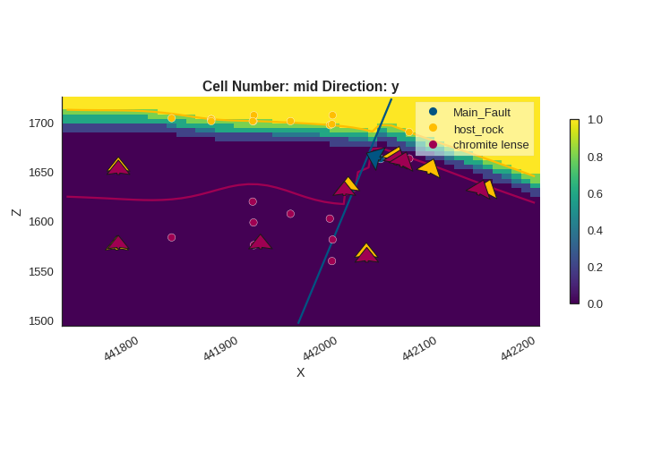
array([[<Axes: title={'center': 'dips\n0'}>,
<Axes: title={'center': 'dips\n1'}>,
<Axes: title={'center': 'dips\n2'}>],
[<Axes: title={'center': 'dips\n3'}>,
<Axes: title={'center': 'dips\n4'}>,
<Axes: title={'center': 'dips\n5'}>],
[<Axes: title={'center': 'dips\n6'}>,
<Axes: title={'center': 'dips\n7'}>,
<Axes: title={'center': 'dips\n8'}>],
[<Axes: title={'center': 'dips\n9'}>,
<Axes: title={'center': 'dips\n10'}>,
<Axes: title={'center': 'dips\n11'}>],
[<Axes: title={'center': 'dips\n12'}>,
<Axes: title={'center': 'dips\n13'}>,
<Axes: title={'center': 'dips\n14'}>],
[<Axes: title={'center': 'dips\n15'}>,
<Axes: title={'center': 'susceptibility\n0'}>,
<Axes: title={'center': 'susceptibility\n1'}>],
[<Axes: title={'center': 'susceptibility\n2'}>,
<Axes: title={'center': 'susceptibility\n3'}>, <Axes: >]],
dtype=object)
Geological Model Uncertainty Visualization¶
gempy_viz(
geo_model=geo_model,
prior_inference_data=data,
n_samples=20,
)
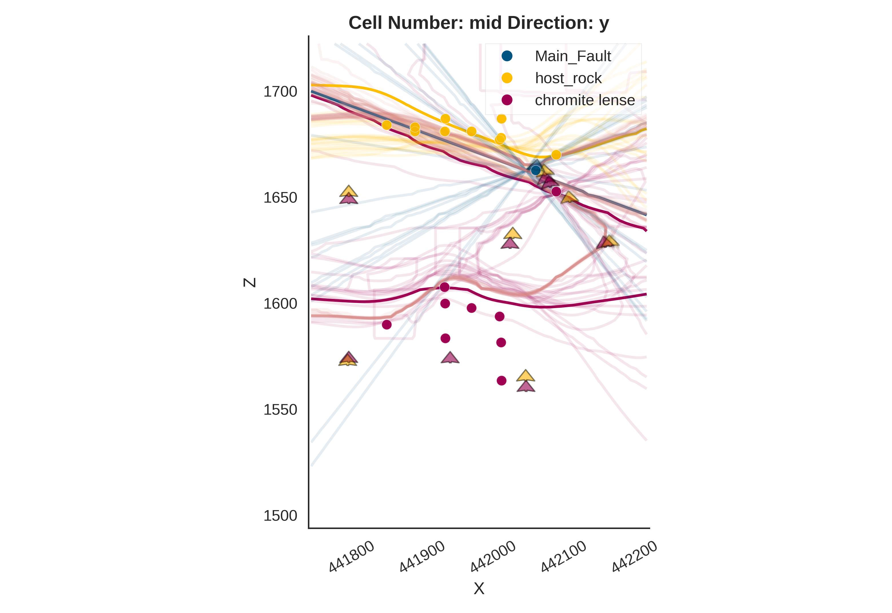
Active grids: GridTypes.OCTREE|NONE
Setting Backend To: AvailableBackends.PYTORCH
/home/leguark/.venv/2025/lib/python3.13/site-packages/torch/utils/_device.py:116: UserWarning: To copy construct from a tensor, it is recommended to use sourceTensor.detach().clone() or sourceTensor.detach().clone().requires_grad_(True), rather than torch.tensor(sourceTensor).
return func(*args, **kwargs)
Setting Backend To: AvailableBackends.PYTORCH
/home/leguark/Projects/gempy_project/gempy_viewer/gempy_viewer/modules/plot_2d/drawer_contours_2d.py:38: UserWarning: The following kwargs were not used by contour: 'linewidth', 'contour_colors'
contour_set = ax.contour(
Setting Backend To: AvailableBackends.PYTORCH
Setting Backend To: AvailableBackends.PYTORCH
Setting Backend To: AvailableBackends.PYTORCH
Setting Backend To: AvailableBackends.PYTORCH
Setting Backend To: AvailableBackends.PYTORCH
Setting Backend To: AvailableBackends.PYTORCH
Setting Backend To: AvailableBackends.PYTORCH
Setting Backend To: AvailableBackends.PYTORCH
Setting Backend To: AvailableBackends.PYTORCH
Setting Backend To: AvailableBackends.PYTORCH
Setting Backend To: AvailableBackends.PYTORCH
Setting Backend To: AvailableBackends.PYTORCH
Setting Backend To: AvailableBackends.PYTORCH
Setting Backend To: AvailableBackends.PYTORCH
Setting Backend To: AvailableBackends.PYTORCH
Setting Backend To: AvailableBackends.PYTORCH
Setting Backend To: AvailableBackends.PYTORCH
Setting Backend To: AvailableBackends.PYTORCH
Setting Backend To: AvailableBackends.PYTORCH
Setting Backend To: AvailableBackends.PYTORCH
Setting Backend To: AvailableBackends.PYTORCH
Setting Backend To: AvailableBackends.PYTORCH
Setting Backend To: AvailableBackends.PYTORCH
Setting Backend To: AvailableBackends.PYTORCH
Setting Backend To: AvailableBackends.PYTORCH
Setting Backend To: AvailableBackends.PYTORCH
Setting Backend To: AvailableBackends.PYTORCH
Setting Backend To: AvailableBackends.PYTORCH
Setting Backend To: AvailableBackends.PYTORCH
Setting Backend To: AvailableBackends.PYTORCH
Setting Backend To: AvailableBackends.PYTORCH
Setting Backend To: AvailableBackends.PYTORCH
Setting Backend To: AvailableBackends.PYTORCH
Setting Backend To: AvailableBackends.PYTORCH
Setting Backend To: AvailableBackends.PYTORCH
Setting Backend To: AvailableBackends.PYTORCH
Setting Backend To: AvailableBackends.PYTORCH
Setting Backend To: AvailableBackends.PYTORCH
Setting Backend To: AvailableBackends.PYTORCH
<gempy_viewer.modules.plot_2d.visualization_2d.Plot2D object at 0x7f26b39296d0>
Spatial Comparison: Prior Predictions
plot_geophysics_comparison(
forward_norm=data.prior[r'$\mu_{magnetics}$'].mean(axis=1),
normalization_method='align_to_reference',
observed_ugal=observed_magnetics_nt,
xy_ravel=magnetic_xyz,
unit_label='nT',
)
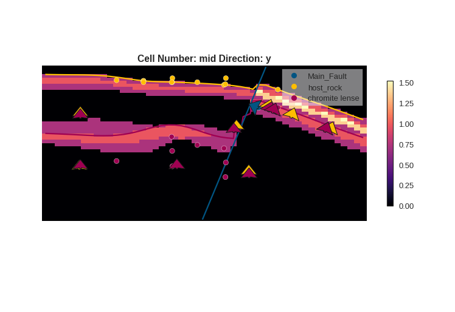
Spatial Comparison: Posterior Predictions
plot_geophysics_comparison(
forward_norm=data.posterior_predictive[r'$\mu_{magnetics}$'].mean(axis=1),
normalization_method='align_to_reference',
observed_ugal=observed_magnetics_nt,
xy_ravel=magnetic_xyz,
unit_label='nT',
)
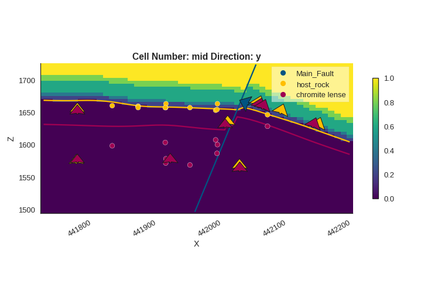
Uncertainty Quantification: Prior
The generate_gravity_uncertainty_plots function works with any geophysical
data type — we pass unit_label and response_label to override the
default gravity labels.
magnetic_samples_norm, unit_label = generate_gravity_uncertainty_plots(
gravity_samples_norm=data.prior[r'$\mu_{magnetics}$'].values[0, :],
observed_gravity_ugal=observed_magnetics_nt,
xy_ravel=magnetic_xyz,
unit_label='nT',
response_label='Magnetics',
title_prefix='Magnetic',
)
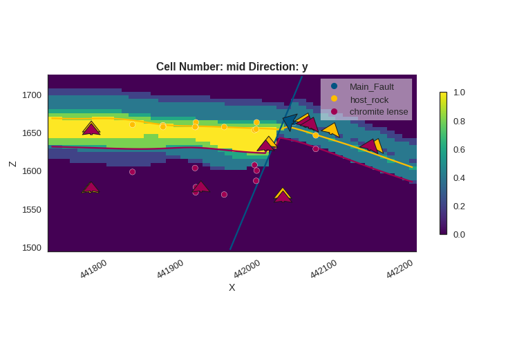
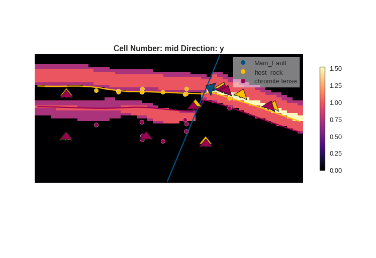
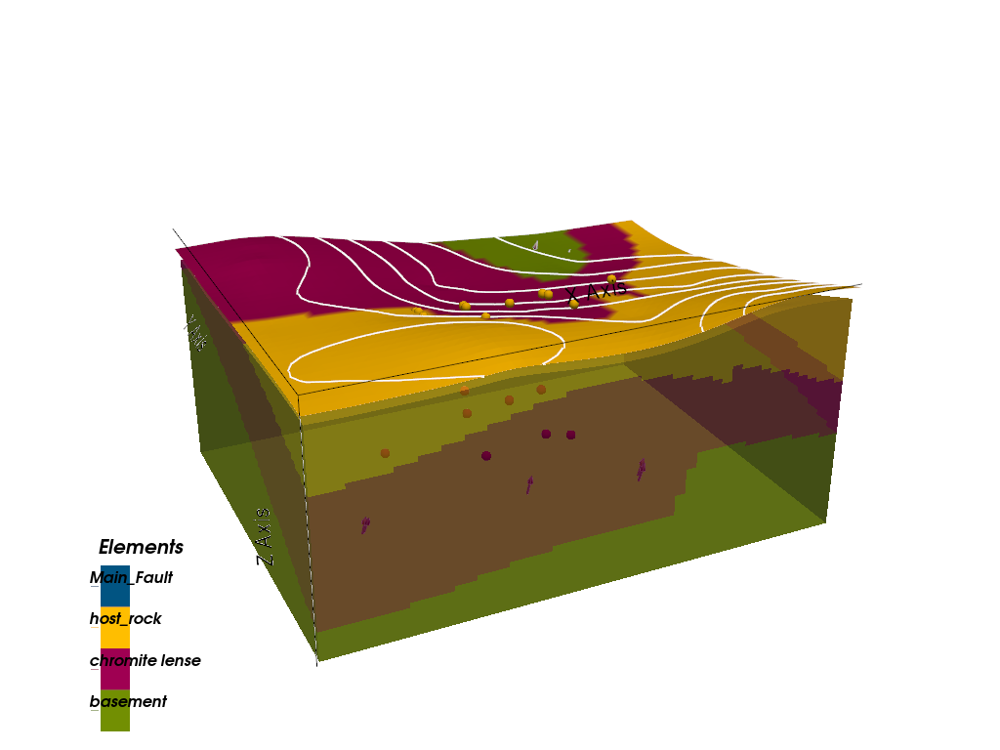
============================================================
EXTRACTED NORMALIZED SAMPLES
============================================================
Number of samples: 100
Number of devices: 20
Normalization was applied DURING inference (not post-processing)
All samples use consistent normalization parameters from observed data
============================================================
============================================================
UNCERTAINTY SUMMARY STATISTICS
============================================================
Mean gravity: 2443.63 ± 16.13 nT
Mean uncertainty: 971.14 nT
Max uncertainty: 1019.63 nT
Min uncertainty: 910.53 nT
Mean CV: 39.74%
RMSE: 2656.48 nT
Correlation (R): -0.109
============================================================
Uncertainty Quantification: Posterior
if hasattr(data, 'posterior_predictive') and r'$\mu_{magnetics}$' in data.posterior_predictive:
magnetic_samples_norm, unit_label = generate_gravity_uncertainty_plots(
gravity_samples_norm=data.posterior_predictive[r'$\mu_{magnetics}$'].values[0, :],
observed_gravity_ugal=observed_magnetics_nt,
xy_ravel=magnetic_xyz,
unit_label='nT',
response_label='Magnetics',
title_prefix='Magnetic',
)
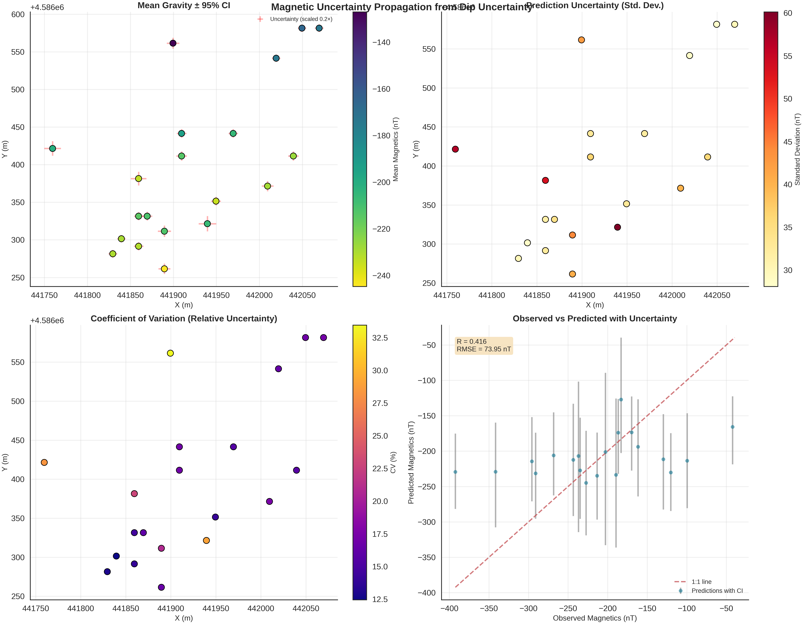
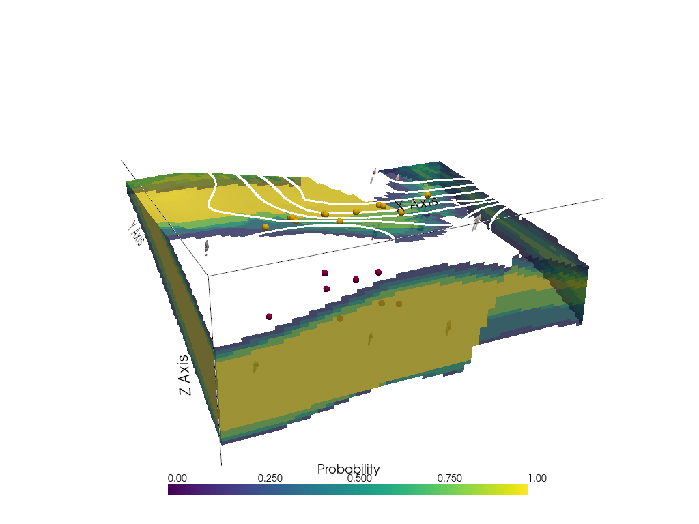
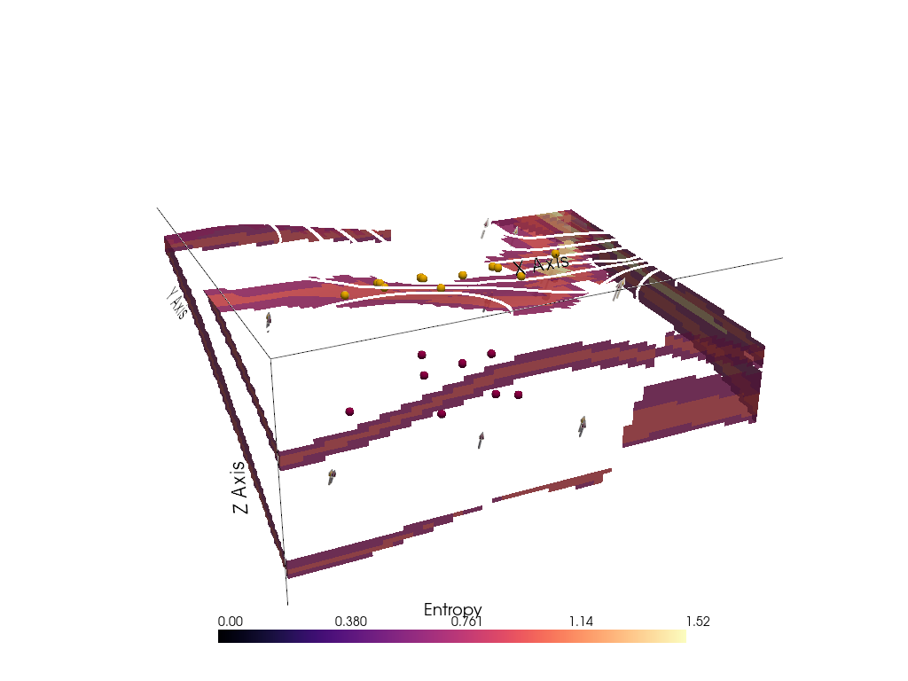
============================================================
EXTRACTED NORMALIZED SAMPLES
============================================================
Number of samples: 200
Number of devices: 20
Normalization was applied DURING inference (not post-processing)
All samples use consistent normalization parameters from observed data
============================================================
============================================================
UNCERTAINTY SUMMARY STATISTICS
============================================================
Mean gravity: -207.99 ± 28.35 nT
Mean uncertainty: 37.53 nT
Max uncertainty: 60.13 nT
Min uncertainty: 28.09 nT
Mean CV: 18.44%
RMSE: 73.95 nT
Correlation (R): 0.416
============================================================
Sigma Analysis: Outlier Detection
Hierarchical modeling automatically identifies stations with unusually high noise, which may indicate localized geological complexity not captured by the simple 4-unit model.
if "sigma_stations" in data.posterior_predictive:
posterior_sigmas = data.posterior_predictive["sigma_stations"].values
station_noise_mean = posterior_sigmas.mean(axis=(0, 1))
sigma_global_mean = station_noise_mean.mean()
problematic = np.where(station_noise_mean > 2 * sigma_global_mean)[0]
print(f"\nPotential outlier stations identified: {problematic}")
az.plot_density(
data=[data, data.prior],
var_names=["sigma_stations"],
filter_vars="like",
hdi_prob=0.9999,
shade=.2,
data_labels=["Posterior", "Prior"],
colors=[default_red, default_blue],
)
plt.title("Per-Station Noise Distribution (Sigma) — Soricom Magnetics")
plt.show()
![log_sigma_stations 0, log_sigma_stations 1, log_sigma_stations 2, log_sigma_stations 3, log_sigma_stations 4, log_sigma_stations 5, log_sigma_stations 6, log_sigma_stations 7, log_sigma_stations 8, log_sigma_stations 9, log_sigma_stations 10, log_sigma_stations 11, log_sigma_stations 12, log_sigma_stations 13, log_sigma_stations 14, log_sigma_stations 15, log_sigma_stations 16, log_sigma_stations 17, log_sigma_stations 18, log_sigma_stations 19, sigma_stations 0, sigma_stations 1, sigma_stations 2, sigma_stations 3, sigma_stations 4, sigma_stations 5, sigma_stations 6, sigma_stations 7, sigma_stations 8, sigma_stations 9, sigma_stations 10, sigma_stations 11, sigma_stations 12, sigma_stations 13, sigma_stations 14, sigma_stations 15, sigma_stations 16, sigma_stations 17, sigma_stations 18, sigma_stations 19, Per-Station Noise Distribution (Sigma) — Soricom Magnetics](../_images/sphx_glr_08_soricom_magnetic_inversion_018.png)
Potential outlier stations identified: []
Summary¶
Key Takeaways
IGRF subtraction is essential: Raw TMI values include Earth’s background field (~47,500 nT). The forward model computes anomalies, so the data must match. Without this step, the likelihood is numerically flat and NUTS cannot move.
Susceptibility prior width matters: A prior scale of 0.03 (wider than the 0.01 used for Tharsis) allows the sampler to explore meaningful parameter space. Tight priors (< 0.01) can freeze the chain.
Noise prior calibration: The hierarchical noise prior should match the observed data scatter (~150 nT). A prior at 50 nT would force the model to explain structural variance as noise, creating a too-narrow posterior.
Fault geometry is constrained: Despite magnetic data being primarily sensitive to susceptibility, the posterior dip distribution is narrower than the prior, showing the data provides geometric constraints.
Comparison with Gravity Inversion
Magnetic inversion shares the same Bayesian framework but uses TMI forward physics and susceptibility instead of density.
The Soricom model has more units (4 vs 2) at a smaller spatial scale.
Hierarchical likelihoods perform similarly for both data types.
For theoretical background, see: - sphx_glr_02_probabilistic_modeling_04_gravity_inversion.py - sphx_glr_02_probabilistic_modeling_05_magnetics_inversion.py
# sphinx_gallery_thumbnail_number = 4
Total running time of the script: (1 minutes 51.289 seconds)